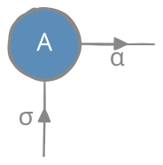
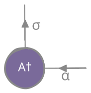
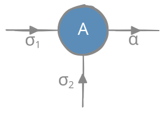
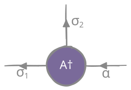

Notation
Covariant indexing
Varies among papers and researchers. Throughout this project we will use the covariant notation convention as presented in (Altland and Von Delft, 2019) (indices of vector as subscripts, indices of vector components as superscripts, subscripts as outgoing arrows, superscripts as incoming arrows).
| Vector space $\mathcal{H}$ | Dual space $\mathcal{H}^*$ | ||
|---|---|---|---|
| Index | on the ket - down | on the bra - up | |
| component of ket - up | component of bra - down | ||
| Simplified notation | subscript indices as ket names | superscript indices as bra names |
Single site
| $\mathcal{H}$ | $\mathcal{H}^*$ | |
|---|---|---|
| basis | $\ket{\varphi_\sigma}$ | $\bra{\varphi^\sigma}$ |
| $\ket{\sigma}$ | $\bra{\sigma}$ | |
| linear combination | $\alpha$: basis kets (down) | $\alpha$: basis bras (up) |
| $\sigma$: components of kets (up) | $\sigma$: components of bras (down) | |
| $\begin{aligned} \ket{\phi_\alpha} &= \sum_{\sigma} \ket{\varphi_\sigma} A^\sigma_\alpha \end{aligned}$ | $\begin{aligned} \bra{\phi^\alpha} &= \sum_{\sigma} \left(A^\sigma_\alpha\right)^{\dagger} \bra{\varphi^\sigma} \\ &= \sum_{\sigma} \left(A^{\dagger}\right)_\sigma^\alpha \bra{\varphi^\sigma} \end{aligned}$ | |
| $\ket{\alpha}=\ket{\sigma} A^\sigma_\alpha$ | $\bra{\alpha}=\left(A^{\dagger}\right)_\sigma^\alpha \bra{\sigma}$ | |
| coefficient matrix | $\braket{\sigma}{\alpha} = A^\sigma_\alpha$ | $\braket{\alpha}{\sigma}=\left(A^{\dagger}\right)_\sigma^\alpha$ |
Multiple sites
| $\mathcal{H}_1\otimes \cdots \otimes \mathcal{H}_N$ | $\mathcal{H}^1\otimes \cdots \otimes \mathcal{H}^N$ | |
|---|---|---|
| direct product basis | $\ket{\varphi_{\vec{\sigma}}} \equiv \ket{\varphi_{\sigma_1 \sigma_2 \cdots \sigma_N}} \equiv \ket{\varphi_{\sigma_N}} \otimes \cdots \ket{\varphi_{\sigma_1}}$ | $\bra{\varphi^{\vec{\sigma}}} \equiv \bra{\varphi^{\sigma_1 \sigma_2 \cdots \sigma_N}} \equiv \bra{\varphi^{\sigma_1}} \otimes \cdots \bra{\varphi^{\sigma_N}}$ |
| linear combination | $\ket{\Phi_\alpha} = \sum_{\vec{\sigma}} \ket{\varphi_{\sigma_1 \sigma_2 \cdots \sigma_N}} A^{\sigma_1 \sigma_2 \cdots \sigma_N}_{\alpha}$ | $\bra{\Phi^\alpha} = \sum_{\vec{\sigma}} {A^*}^{\alpha}_{\sigma_N \sigma_{N-1} \cdots \sigma_1} \bra{\varphi^{\sigma_1 \sigma_2 \cdots \sigma_N}}$ |
Coefficient tensors
- $\ket{\alpha}=\ket{\sigma} A^\sigma_\alpha \qquad$ and $\qquad \bra{\alpha}=\left(A^{\dagger}\right)_\sigma^\alpha \bra{\sigma}$
| $A^\sigma_\alpha=\braket{\sigma}{\alpha}$ |  | $\left(A^{\dagger}\right)_\sigma^\alpha=\braket{\alpha}{\sigma}$ |  |
- $\ket{\alpha}=\ket{\sigma_2}\otimes\ket{\sigma_1} A^{\sigma_1\sigma_2}_\alpha \qquad$ and $\qquad \bra{\alpha}=\left(A^{\dagger}\right)_{\sigma_2\sigma_1}^\alpha \bra{\sigma_1}\otimes\bra{\sigma_2}$
| $A^{\sigma_1\sigma_2}_\alpha=\bra{\sigma_1}\otimes\braket{\sigma_2}{\alpha}$ |  | $\left(A^{\dagger}\right)_{\sigma_2\sigma_1}^\alpha=\braket{\alpha}{\sigma_2}{\otimes}\ket{\sigma_1}$ |  |